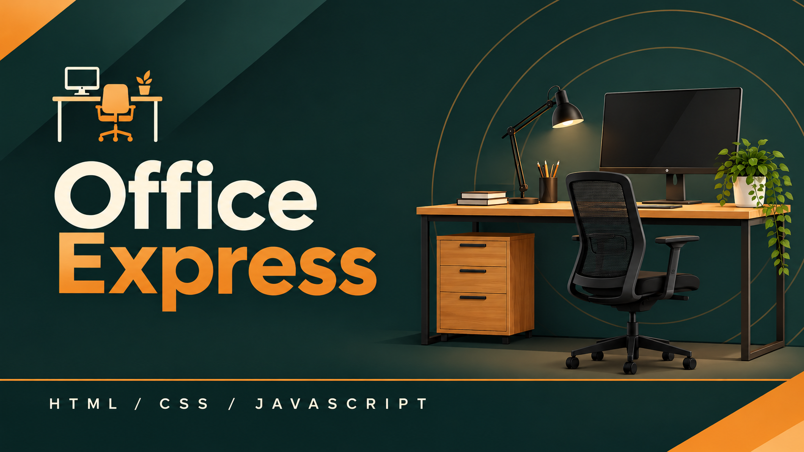
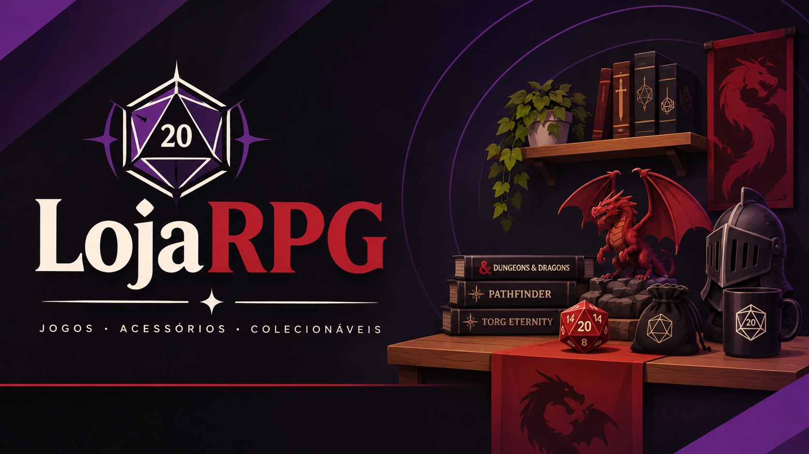
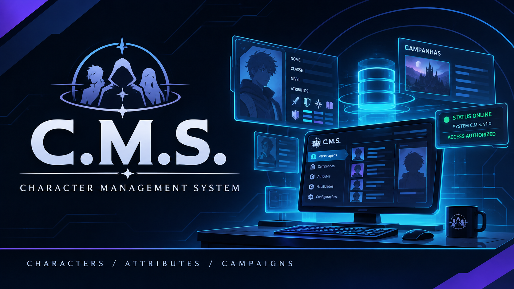
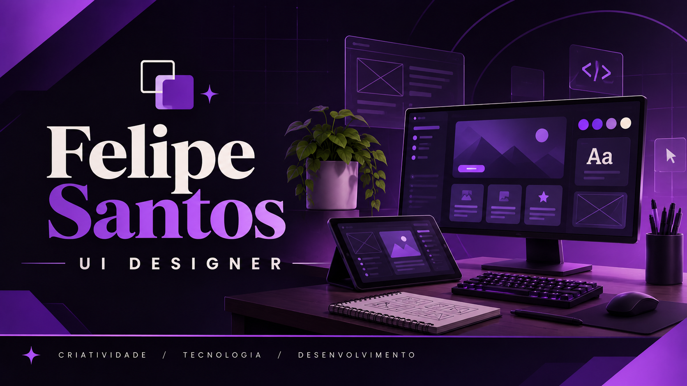
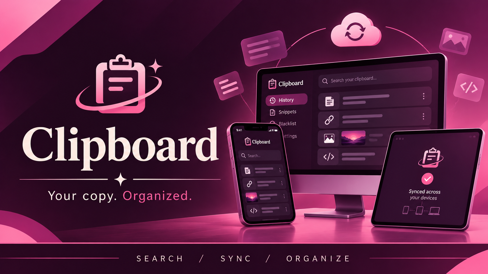
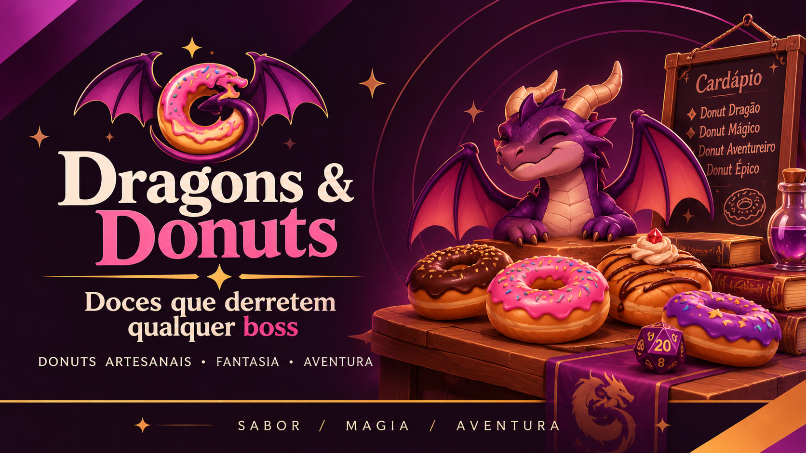
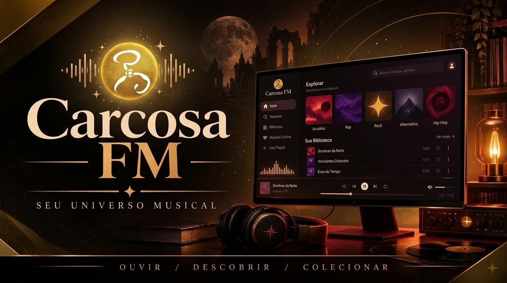

Officie Express
O Office Express é um site de vitrine de produtos voltado para mobílias de home office, funcionando como um mini e‑commerce.
Confira alguns dos projetos que desenvolvi

O Office Express é um site de vitrine de produtos voltado para mobílias de home office, funcionando como um mini e‑commerce.

Quest & Dados é uma loja virtual especializada em RPG de mesa, oferecendo dados, livros, miniaturas, acessórios e itens temáticos para jogadores e mestres.

Site criado para gerenciar personagens de jogos de RPG.


Aplicação desenvolvida para melhor progrmação em interfaces mobile
A Loja da Felicidade é um e-commerce fictício desenvolvido para praticar desenvolvimento front-end para dispositivos moveis.

Dragons & Donuts é uma uma doceria temática inspirada no RPG Dugeons & Dragons. O projeto foi desenvolvido com foco em identidade visual

Carcosa-FM é um Streaming de Musica fictício desenvolvido para praticar o alinhamento de complementos em relação a página desenvolvida
Aplicação que simula a agenda de uma oficina mecânica, apresentando uma interface de acesso para usuários por meio de login e senha.